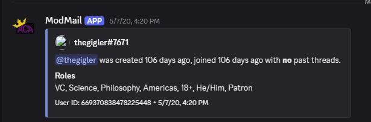

Discord Privileged Intent Review
Server Members Intent
ACD Modmail is a self-hosted Modmail instance used to let Discord members contact the server moderation team privately. A user begins the interaction by sending a direct message to the bot. Modmail must then identify the corresponding member of the server and make relevant member information available to moderators handling the conversation.
A server member contacts ACD Modmail by DM
The Modmail workflow begins outside the server itself. The user sends a direct message to ACD Modmail, so the bot must associate that Discord user with the corresponding member record in the server.

Modmail uses the corresponding server-member record
In the staff-side Modmail conversation, the bot identifies the Discord member and displays information derived from that member's server record. The example below shows server join information, the member's server roles, and the Discord user ID associated with the Modmail conversation.

What the screenshots demonstrate
The first screenshot shows that the user initiates contact through a direct message to the bot. The second shows that Modmail then uses server-member information to identify that user and provide moderators with the member context needed to handle the Modmail conversation.
The Server Members Intent is not used for presence tracking, advertising, or unrelated monitoring of server members. It supports the core Modmail workflow of associating a DM sender with the correct member of the server.